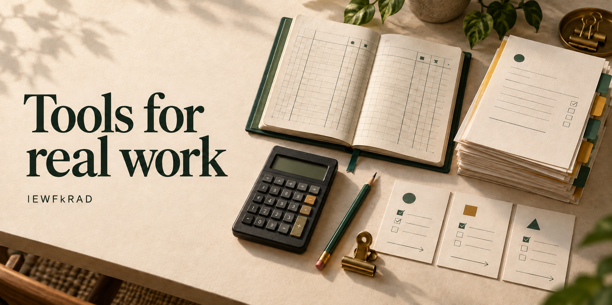

Accounting · Documents · Practical software
Tools for real work.
I’m an accountant building tools for reconciliations, document intake, and engagement management — with a few experiments beyond the desk.

From the workbench
23 active public projects. Each link opens its source and setup guide.
Hermes Agent ↗
A contribution fork of the personal AI agent built by Nous Research.
Windows · Read-only perceptionHermes Eats World ↗
Give Hermes a structured, read-only view of Windows applications through UI Automation.
Handwriting · Hermes sessionsHermes Notebook ↗
A handwriting-first companion that connects notebook pages to ordinary Hermes sessions and tools.
Spreadsheets · Verified editsHermes for Excel ↗
Read across sheets, work with formulas, and review changes with Hermes inside Excel.
Private network · Mobile terminalHermes TUI Web ↗
Bring the Hermes terminal to a phone-friendly browser over your private network.
Windows · UnreleasedHermes Document Reader ↗
Turn a profile’s incoming documents into readable text and structured workbook exports.
Mathematics · Interactive experimentsScience Stack ↗
Mathematical experiments with numerical checks, reproducible evidence, and clearly stated approximation limits.
Independent inference researchQwen3.8 · One RTX PRO 6000 ↗
Single-GPU inference reports, reproducibility artifacts, and experimental inspection tools.
Android · Working prototypeHermes Android ↗
Connect an Android device to Hermes through a permission-based bridge and remote toolset.
Codex skill · Bounded assistanceDelegate to Local GPU ↗
A skill for local-model preprocessing with verification owned by the coordinating agent.
Teaching · Reviewed lessonsOnyx Chalkline ↗
Teacher-led workspaces for lessons, learner questions, coursework, and instructor feedback.
Research · Unsafe pre-alphaThe Human Harness ↗
Research on a shared evidence record for human–AI collaboration, with an experimental audit-log prototype.
Spatial workspace · Experimental PCVRThe Whiskey Room ↗
A Godot and OpenXR workspace with familiar Hermes windows, a shared file tray, and room to think.
Fan mod · PrototypeLast Stand: Halo 3 Survivors ↗
A native Halo 3 fan-mod prototype with overhead survival combat, automatic attacks, and branching upgrades.
Local MCP · Blank templateEngagement MCP Template ↗
Expose a local engagement folder through a typed MCP interface with audience filtering and human-controlled gates.
Record · Inspect · Try differentlyMelange ↗
Record computational work, inspect its history, and try bounded What-if runs while preserving the Original.
Windows · Read-only statusWireGuard for Hermes ↗
Read local Windows WireGuard tunnel and peer status from Hermes.
Music · Unofficial integrationTIDAL for Hermes ↗
Search your TIDAL library, organize playlists, and control local music playback through Hermes.
Linux · Game streamingSunshine / Moonlight for Hermes ↗
Set up and diagnose Sunshine-to-Moonlight game streaming from Hermes.
Game creation · Open workbenchHermes Game Studio ↗
Agent-assisted game-asset tools spanning references, mesh jobs, review, and playable-world verification.
Hermes plugin · Host telemetryProprioception ↗
Give Hermes a concise reading of its host, with updates when state materially changes.
Self-hosted networking · Hermes pluginNetPlane ↗
Install and manage a self-hosted Headscale control plane from Hermes.
Hermes Desktop · Reading companionWord Peek ↗
Explore a document with Hermes beside it, keeping your place and your questions together.
What I’m building
Explore the source for details and setup.
- 01Spreadsheets with Hermes for Excel
- 02Readable documents with Document Reader
- 03Organized work with Engagement MCP
Before you begin
Project notes
Independent projects. Follow each repository’s setup, status and license notes. Many extend Hermes Agent, built by Nous Research and contributors.
Project descriptions follow the public documentation. Consult the repository for current requirements, limitations, and license terms.